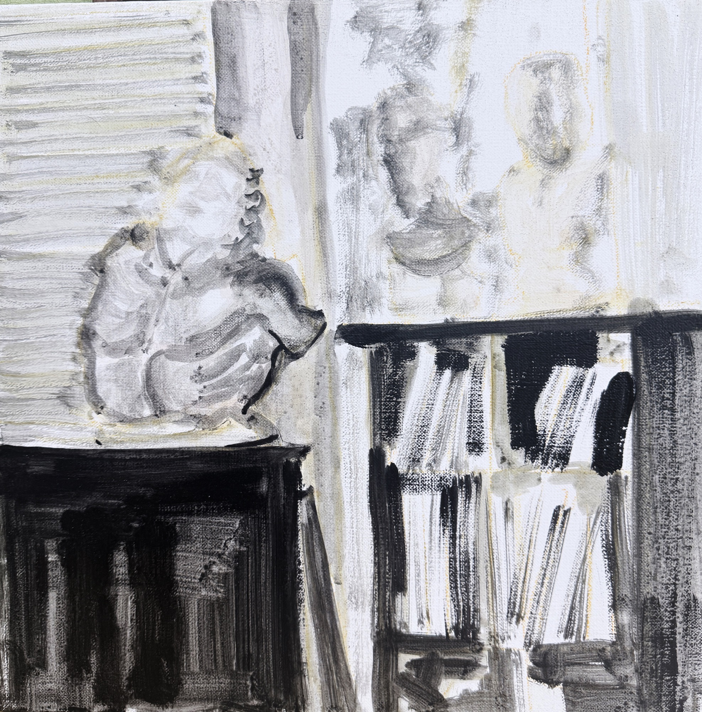

Layers of Memory
重叠的记忆

- Artwork ID / 作品编号
- KW-O-000024
- Year / 年份
- 2026
- Medium / 媒介
- Oil on canvas / 布面油画
- Dimensions / 尺寸
- 40 × 40 cm (H × W / 高 × 宽)
About the work / 作品介绍
Layers of Memory was completed in 2026 as part of the Light and Life series. Using a Laocoön plaster cast, bookshelves, and partially revealed studio sculptures, the painting explores how memories accumulate through layers of observation, learning, and artistic practice. Rather than depicting objects in full detail, it intentionally balances revelation and concealment.The work is not a traditional studio still life but a meditation on artistic memory. Classical forms, knowledge, and light coexist within the same pictorial space, allowing different moments of experience to overlap and continuously generate new meanings.
《重叠的记忆》完成于2026年，属于“光与生命”系列。作品以画室中的拉奥孔石膏像、书架及背景石膏像为视觉线索，通过有意识的留白、虚化与层叠笔触，使不同时间、不同经验在同一空间中交汇。画面并非追求对象的完整再现，而是在显现与隐匿之间建立观看的节奏。拉奥孔象征艺术传统，书籍承载知识积累，而光线则将这些记忆重新连接。作品所表达的并非静物本身，而是艺术家长期学习、观看与创作过程中不断累积、不断重组的精神经验。记忆并非线性存在，而是在每一次观看中重新叠加、重新生成。